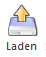
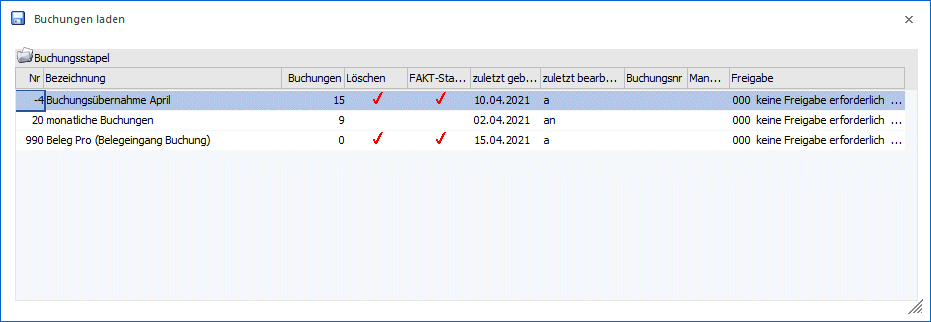
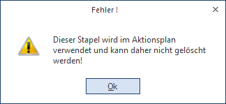
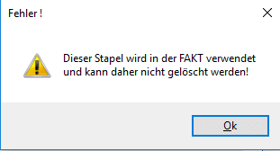
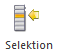
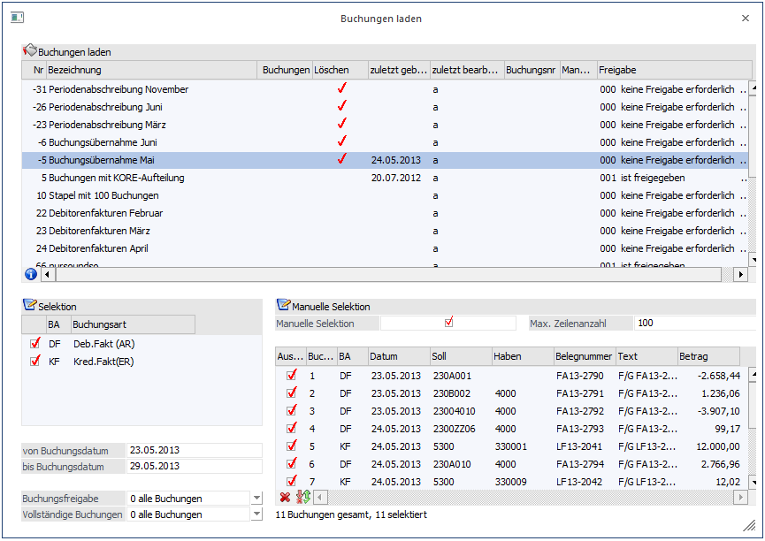
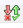
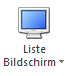
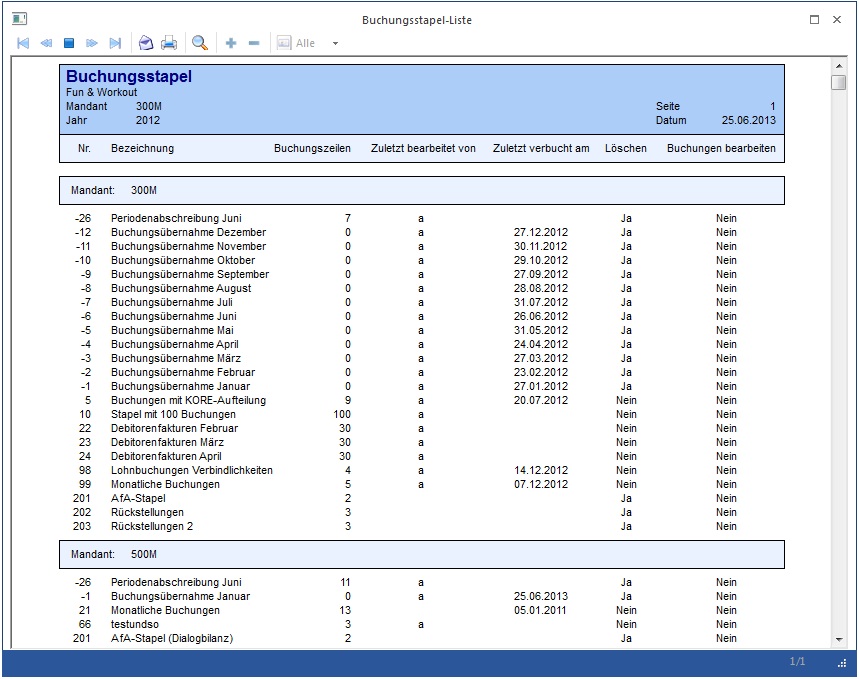

Das Fenster "Buchungen laden" kann entweder im "Buchen (Dialog Stapel)", im "Buchen (Dialog Stapel) Quick", im "Buchen Zahlungsmittelkonto" oder im "Auto-Buchen" aufgerufen werden. In den unterschiedlichen Fenstern stehen auch unterschiedliche Funktionen zur Verfügung:
Buchen (Dialog Stapel) / Buchen (Dialog Stapel) Quick
Wird im Buchen (Dialog Stapel) oder im Buchen (Dialog Stapel) Quick der LADEN-Button angeklickt, werden alle Buchungsstapel angezeigt, die im Fenster "Buchen (Dialog Stapel)" oder "Buchen (Dialog Stapel) Quick bearbeitet werden können. Dazu gehören die Stapel aus der Fakturierung bzw. aus der Anlagenbuchhaltung und die Stapel, die im "Buchen (Dialog Stapel)", "Buchen (Dialog Stapel) Quick" oder im "Buchen Zahlungsmittelkonten" erfasst wurden.
Ø

Nach Anklicken des Laden-Buttons werden in einem Fenster alle gültigen Stapel angezeigt.

Buchen Zahlungsmittelkonten
Wird im Buchen Zahlungsmittelkonten der LADEN-Button angeklickt, werden alle Buchungsstapel angezeigt, die im Programmpunkt "Buchen Zahlungsmittelkonten" abgespeichert wurden. "Normale" Stapel, die im Buchen Dialog Stapel erfasst und gespeichert wurden, können hier nicht geöffnet werden.
Automatisches Zwischenspeichern von Buchungsstapeln
Buchungsstapel mit der Bezeichnung "AutoSave - Benutzer - Datum Uhrzeit" stehen nach einem Systemabbruch zum Laden zur Verfügung, wenn in den FIBU-Paramater-Einstellungen das automatische Zwischenspeichern von Buchungsstapeln aktiviert wurde.
Allgemeine Funktionen
Ø Nr
Anzeige der Stapelnummer.
Ø Bezeichnung
Bezeichnung des Stapels.
Ø Buchungen
Anzeige der Anzahl der vorhandenen Buchungszeilen
Ø Löschen
Ist diese Spalte aktiviert, d.h. ist es mit einem Häkchen versehen, wird der Stapel nach Verbuchen gelöscht. Diese Option kann beim Speichern von Stapeln gesetzt werden, bei Stapeln, die von der WinLine selbst erzeugt werden (Buchungsstapel aus der WinLine FAKT oder WinLine LOHN), wird diese Option automatisch gesetzt.
Ø zuletzt gebucht am
In dieser Spalte wird das Tagesdatum angezeigt, zu dem der Stapel zuletzt gebucht wurde.
Ø zuletzt bearbeitet von
In dieser Spalte wird der Benutzername angezeigt, der den Stapel zuletzt bearbeitet bzw. erstellt hat. Bei den Stapeln, die von der WinLine erzeugt werden, wird immer der Benutzer angezeigt, der den Stapel erstellt hat. Wird so ein automatisch erstellter Stapel allerdings manuell geändert, dann wird der Benutzer gemerkt, der die Änderungen vorgenommen hat.
Beispiel
Der Benutzer "a" schreibt in der WinLine FAKT als erster eine Rechnung für die Periode März, der Stapel -3 ist noch nicht vorhanden. In dem Fall wird der Benutzer "a" gespeichert und angezeigt. Schreibt der Benutzer "b" auch eine Rechnung im März, wird trotzdem der Benutzer "a" angezeigt. Erst wenn der Benutzer "b" den Stapel öffnet, eine Änderung vornimmt und dann wieder speichert, wird ab diesem Zeitpunkt der Benutzer "b" angezeigt.
Hinweis
Wird z.B. bei den Stapeln -1 bis -12, die von der WinLine FAKT beschickt werden, kein Benutzername angezeigt, dann liegt das daran, dass diese Stapel mit einer älteren Version erzeugt wurden. In dem Fall könnten die Stapel gelöscht werden, bei der nächsten Erstellung wird dann der Benutzer mit gespeichert.
Ø Buchungsnr / Mandant
Handelt es sich bei dem Stapel um einen Stapel der aus dem Menüpunkt "Buchungen bearbeiten" gespeichert wurde, werden die gespeicherte Buchungsnummer sowie der zugehörige Mandant angezeigt.
Zur Bearbeitung kann ein Stapel gewählt werden, indem der gewünschte Stapel durch einen Doppelklick oder durch einen Klick auf den OK-Button übernommen wird.
Über diesen Programmpunkt können auch bestehende Stapel gelöscht werden.
Vorgangsweise Stapel löschen
Nach Anklicken des LADEN-Buttons wird in der Tabelle der gewünschte Stapel ausgewählt. Danach wird der LÖSCHEN-Button angeklickt. Dadurch wird der Stapel gelöscht. Vor dem Löschen eines Buchungsstapels wird geprüft, ob dieser in einem Aktionsplan vorkommt. Ist dies der Fall, erscheint eine entsprechende Meldung und der Stapel kann nicht gelöscht werden. Je nachdem, wie der Stapel angelegt wurde, wird ein Stapel nach dem Buchungsvorgang automatisch gelöscht oder nicht (siehe Kapitel "Buchungen Speichern").

Vor dem Löschen eines abweichenden FAKT-Stapels wird geprüft, ob dieser in der FAKT bereits verwendet wird, z. B als Buchungsstapel in einer Belegart hinterlegt, und gelöscht werden kann.

Ø

Durch Anklicken des Selektions-Buttons (steht im Auto-Buchungen nicht zur Verfügung) können Teile eines Buchungsstapels ausgewählt und ins Buchungsprogramm übernommen werden. Dazu wird das Fenster "Buchungen Laden" vergrößert, damit noch zusätzliche Informationen sichtbar werden:

Bereich Selektion
In dieser Tabelle werden alle Buchungsarten angezeigt, die im ausgewählten Buchungsstapel vorhanden sind. Durch Deaktivieren der gewünschten Buchungsarten werden diese dann in weiterer Folge nicht in das Buchungsprogramm mit übernommen.
In den Eingabefeldern
Ø von
Buchungsdatum
bis Buchungsdatum
kann zusätzlich noch ein Zeitraum definiert werden, für den die Buchungen bearbeitet werden soll.
Ø Buchungsfreigabe
Das Kennzeichen Buchungsfreigabe, das in den FIBU-Parametern für unterschiedliche Stapeltypen definiert wird, kann selektiert werden. Es werden dann nur die ausgewählten Buchungen in das Buchungsprogramm übernommen.
Zur Auswahl stehen:
ü Alle Buchungen
ü Nur freigegebene Buchungen
ü Nur nicht freigegebene Buchungen
Ø Vollständige Buchungen
Wenn ein ZAGL-Buchungsstapel aus dem Zahlungsausgleich abgestellt wird, können folgende Buchungen ausgewählt und in das Buchungsprogramm übernommen werden.
ü Alle Buchungen
ü Nur vollständige Buchungen
ü Nur unvollständige Buchungen
Bei einer unvollständigen Buchung ist ein „!“ im Kontonummern-Feld zu sehen. Diese Buchung muss dann noch vor dem Verbuchen im Buchungsprogramm bearbeitet werden.
Beispiel
Am Monatsende sollen nur die Buchungen bis zum 20. des Monats übernommen werden, der Rest soll noch im Stapel bleiben, damit etwaige Änderungen ohne Storno vorgenommen werden können.
Manuelle Selektion
Wenn im Bereich der Manuellen Selektion die Option
Ø Manuelle Selektion
aktiviert wird, dann werden in der darunterliegenden Tabelle die Buchungszeilen des Stapels angezeigt. In der Tabelle werden die Informationen
Ø Buch.Nr.
Ø BA
Ø Datum
Ø Soll
Ø Haben
Ø Belegnummer
Ø Text
Ø Betrag
angezeigt. Über die Checkbox
Ø Auswahl

kann gewählt werden, welche Buchungen in das Buchungsprogramm übernommen werden sollen. Durch die Buttons Keine () bzw. Umkehren ( ) kann die Selektion auch noch gesteuert werden.
Über das Feld
Ø Max. Zeilenanzahl
kann gesteuert werden, wie viele Zeilen in der Tabelle angezeigt werden sollen. Diese Funktion ist vor allem dann wichtig, wenn Stapel mit vielen Zeilen vorhanden sind (sonst würde die Anzeige des Stapelinhaltes zu lange dauern). Ist die Anzahl der "Max. Zeilenanzahl" geringer als die im Stapel befindlichen Buchungen, dann werden alle Buchungen automatisch markiert (Checkbox Auswahl) und diese Selektion kann nicht verändert werden. In dem Fall würde dann trotzdem der gesamte Stapel geladen werden.
Ist die Anzahl der "max. Zeilenanzahl" kleiner als die Anzahl der Buchungen, die im Stapel enthalten sind, und wirkt zusätzlich noch die Einschränkung auf eine Buchungsart und/oder auf das Datum, dann kann es vorkommen, dass nur bestimmte Buchungen markiert sind - allerdings können auch diese dann nicht verändert werden.
Damit immer ersichtlich ist, welchen Status die gewählten Buchungen haben, wird das auch unterhalb der Tabelle angezeigt.
Beispiele
ü 30 Buchungen gesamt, 30
selektiert
In dem Fall sind im Stapel 30 Buchungen enthalten, es gibt keine
Einschränkungen, alle Buchungen würden übernommen werden.
ü 30 Buchungen gesamt, 22
selektiert
In dem Fall gibt es eine Selektion im Stapel. D.h. es könnte eine
bestimmte Buchungsart ausgewählt worden sein, oder es gibt eine Einschränkung
auf das Datum.
ü 30 Buchungen gesamt, 10 angezeigt
(keine manuelle Selektion), 30 selektiert
In dem Fall ist die Anzahl der
"max. Zeilenanzahl" auf 10 Buchungen beschränkt worden, ansonsten gibt es aber
keine Einschränkung, es würde der gesamte Stapel geladen werden.
ü 30 Buchungen gesamt, 10 angezeigt
(keine manuelle Selektion), 1 selektiert
In dem Fall ist die Anzahl der "max.
Zeilenanzahl" auf 10 Buchungen beschränkt worden, zusätzlich dazu gibt es noch
eine Einschränkung (z.B. auf ein Datum oder eine Buchungsart) - es würde nur die
eine Buchung geladen werden.
Achtung
Wenn aus einem "normalen" Buchungsstapel (Nummer 1 - 99 bzw. 500 - 999) Teile geladen werden und der Stapel dann wieder unter der gleichen Nummer gespeichert wird, dann gehen die nicht geladenen Buchungen verloren!
Ø

Über den Button Liste Bildschirm/Drucker wird eine Buchungsstapel-Liste ausgegeben, auf der die Buchungsstapel aller zuvor ausgewählten Mandanten (Hauptmandant und Submandanten) aufgelistet werden.
